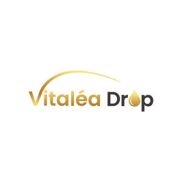

Trade Mark Journal No.2025/014 4 April 2025
UK00004148583 16 January 2025 (1,5,32)

- Class 1
- Vitamins for use in the manufacture of food supplements; Choline chloride for use in the manufacture of vitamins; Stabilisers for vitamins; Chemical supplements for use in the manufacture of vitamins; Antioxidants for use in the manufacture of food supplements; Vitamins for use in the manufacture of cosmetics; Calcium ascorbate for the food industry; Vitamins for the food industry; Calcium fluoride; Calcium; Vitamins for use in the manufacture of pharmaceuticals; Magnesium fluoride; Calcium cyanide; Potassium fluoride; Calcium peroxide; Calcium-based algae nutrient supplements for use in aquaria; Calcium peroxide for use in horticulture; Selenium; Potassium; Calcium iodide; Chelated substances for use as supplements for plant foliage.
- Class 5
- Vitamin supplements; Vitamins and vitamin preparations; Vitamin and mineral supplements; Vitamin tablets; Liquid vitamin supplements; Vitamin drinks; Vitamin drops; Vitamin and mineral food supplements; Vitamin supplement patches; Vitamin supplements for animals; Vitamin preparations; Vitamin and mineral preparations; Vitamin and mineral supplements for pets; Vitamin supplements for use in renal dialysis; Prenatal vitamins; Vitamin C preparations; Vitamin A preparations; Effervescent vitamin tablets; Vitamin D preparations; Vitamin B preparations; Mixed vitamin preparations; Vitamin preparations in the nature of food supplements; Anti-oxidant supplements; Folic acid dietary supplements; Gummy vitamins; Dietary supplements consisting of vitamins; Antioxidant pills; Anti-oxidant food supplements; Calcium supplements; Zinc dietary supplements; Multivitamins; Vitamin enriched bread for therapeutic purposes; Mineral dietary supplements; Protein dietary supplements; Lecithin dietary supplements; Vitamin fortified beverages for medical purposes; Enzyme dietary supplements; Preparations of vitamins; Flaxseed oil dietary supplements; Mineral nutritional supplements; Flaxseed dietary supplements; Antioxidants; Preparations for supplementing the body with essential vitamins and microelements; Mineral dietary supplements for humans; Protein powder dietary supplements; Chlorella dietary supplements; Vitamins for animals; Soy protein dietary supplements; Protein supplements; Albumin dietary supplements; Propolis dietary supplements; Soy isoflavone dietary supplements; Calcium tablets as a food supplement; Glucose dietary supplements; Zinc supplement lozenges; Probiotic supplements; Liquid dietary supplements; Linseed oil dietary supplements; Linseed dietary supplements; Acai powder dietary supplements; Nutraceuticals for use as a dietary supplement; Whey protein dietary supplements; Mineral dietary supplements for animals; Dietary and nutritional supplements; Dietary supplements; Vitamins for pets; Liquid nutritional supplements; Nutritional supplements; Health food supplements made principally of vitamins; Colostrum supplements; Multivitamin preparations; Dietary supplements for infants; Wheat dietary supplements; Pollen dietary supplements; Yeast dietary supplements; Dietary supplements for controlling cholesterol; Alginate dietary supplements; Prebiotic supplements; Multi-vitamin preparations; Ganoderma lucidum spore powder dietary supplements; Dietary supplements for humans; Anti-oxidants for dietary use; Cod-liver oil capsules; Dietary food supplements; Dietary supplements and dietetic preparations containing CBD oil; Health-aid foods supplements containing ginseng; Casein dietary supplements; Wheat germ dietary supplements; Dietary supplements in powder form; Dietary supplement drinks; Health-aid foods supplement containing red ginseng; Ground flaxseed fiber for use as a dietary supplement; Anti-oxidants obtained from herbal sources; Protein supplements for animals; Liquid herbal supplements; Dietary supplements consisting primarily of calcium; Nutritional supplements consisting primarily of calcium; Pine pollen dietary supplements; Herbal supplements; Royal jelly dietary supplements; Dietary supplements for animals; Dietary supplements and dietetic preparations; Activated charcoal dietary supplements; Dietary supplements consisting primarily of magnesium; Nutritional supplements consisting primarily of magnesium; Calcium fortified candy; Nutritional supplement energy bars; Iodine; Dietary supplements with a cosmetic effect; Diet capsules; Nutritional supplements consisting primarily of zinc; Food supplements; Powdered fruit-flavored dietary supplement drink mix; Brewer's yeast dietary supplements; Dietary supplement drink mixes; Protein supplement shakes; Powdered nutritional supplement energy drink mix; Homeopathic supplements; Medicated food supplements.
- Class 32
- Vitamin fortified non-alcoholic beverages; Vitamin enriched sparkling water [beverages]; Drinking water with vitamins; Non-alcoholic drinks enriched with vitamins and mineral salts; Beverages containing vitamins.
GROUNDED BODY SCRUB LTD